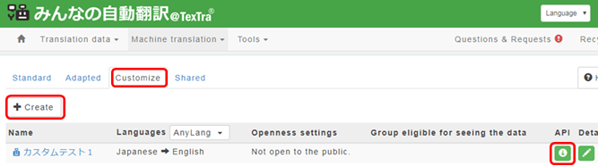
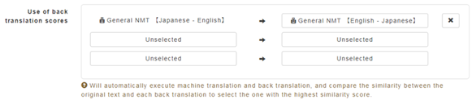

Score for translations
"Translation Score" is a function of
Trados.
However, the method scoring is TexTra
original.
The score shows how approximate
the
reverse translation of the original sentence
and the translation
result is.
To show the score on the Trados,
it is necessary to add
Translation API and make settings
on "Min'na no Jidou
Hon'yaku".
Menu＞Machine Translation＞Customize
Push
"Create" buttonor,
or "Edit" button of created Translation
API.

On Edit screen > Use of back translation scores,
specify
translation APIs to utilize score calculation.

Set the customized
translation API to use on TexTra.
(Refer Translation Settings > TM
API Settings)